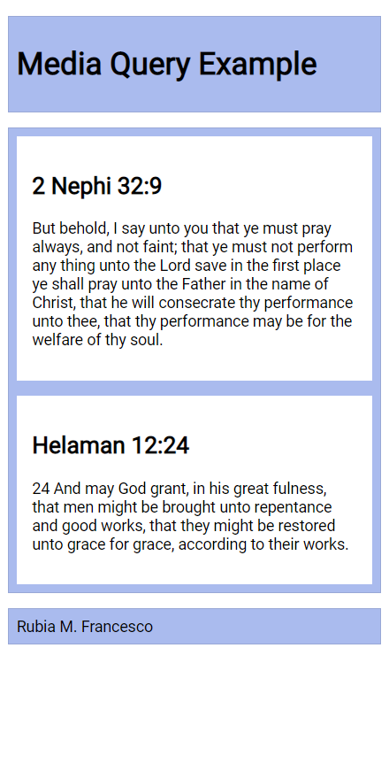
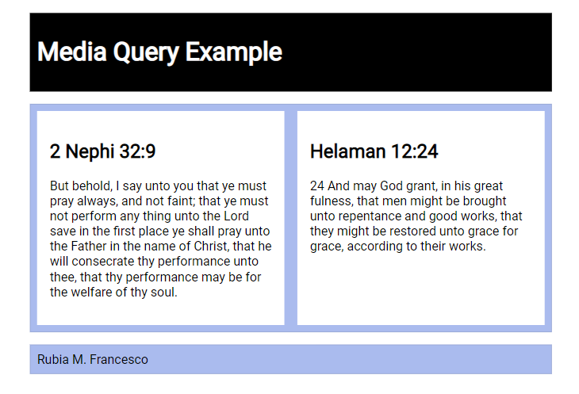

Media Queries - Practice.
Preparation #
You will need your editor open to create some new files to contain the work on this exercise.
These activities will be most effective if you try them first before you look at the solution. And after you do look at the solution...do not copy and paste the code. Read through it, try to understand what it is doing...then go fix your code.
Step 1: File and Folder Setup #
- Create a new HTML file named "media-query.html".
- Add a CSS file named "media-query.css".
Step 2: HTML #
-
In your media-query.html file, create a valid HTML page with standard head content including:
- Meta with a Charset Attribute
- Meta Viewport Element
- Title Element
- Link to a Google Font named "Roboto".
- Link reference to your CSS file.
-
In the
bodyof the HTML document, add aheaderwith anh1, amainelement with twosectionelements, and afooterelement.- The h1 element should contain the words "Media Query Example".
- Each section h2 heading contains a scripture with book, chapter, and verse.
- The section paragraph contains a copy of the actual scripture referenced in the heading.
- The footer should contain your name.
Solution 1
<header>
<h1>Media Query Example</h1>
</header>
<main>
<section>
<h2>2 Nephi 32:9</h2>
<p>But behold, I say unto you that ye must pray always, and not faint; that ye must not perform any thing unto the Lord save in the first place ye shall pray unto the Father in the name of Christ, that he will consecrate thy performance unto thee, that thy performance may be for the welfare of thy soul.</p>
</section>
<section>
<h2>Helaman 12:24</h2>
<p>And may God grant, in his great fulness, that men might be brought unto repentance and good works, that they might be restored unto grace for grace, according to their works.</p>
</section>
</main>
<footer>
[Your Full Name Here]
</footer>Step 3: CSS #
Style the document as shown in the example screenshots given below.
-
Use the Google Font - Roboto in the body rule,
-
The header, main, and footer each
- have a maximum width of 640 pixels
- are centered on the page using margin: 1rem auto
- include a faint border and appropriate padding
- have a blueish background color of your choice
-
Set the main element to be a CSS grid with a grid template of only one column, and a equal gap of 1rem, and
-
Set the section elements to also have padding and a white background.
-
Write a containing media query to be applied at a viewport width of 500px or greater (
@media screen and (min-width: 500px)). -
Change the
headerto black background with white text -
Change the
mainelement to display two columns of equal size.
Partial Solution
body {
font-family: 'Roboto', sans-serif;
}
header, main, footer {
max-width: 640px;
margin: 1rem auto;
border: 1px solid #bbb;
padding: 1rem;
background-color: #e6f2ff;
}
main {
display: grid;
grid-template-columns: 1fr;
grid-gap: 1rem;
}
section {
padding: 1rem;
background-color: #fff;
}Example Screenshots #

